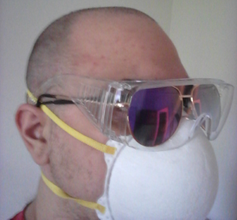

Salutations. I'm a still mostly undecided tech student who's learning to piece together HTML and other languages. I enjoy occasionally drafting out UI elements that might not ever be used solely out of interest for the aesthetic. I also have some very loud opinions you can read over on my journal.
In an agitated state of mind, I erased the contents of my scalp as my hair falling out kept passively causing plumbing woes. Peer left to witness three pairs of glasses.
I'll be sure to add more here as time goes on and provides me with more to write.